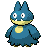
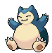

-
Bulbasaur #001

- grama
- veneno
Há uma semente de planta em suas costas desde o dia que este Pókemon nasce. A semente cresce lentamente.
-
Ivysaur #002

- grama
- veneno
Quando o bulbo em suas costas cresce, parece perder a capacidade de ficar de pé em suas patas traseiras.
-
Venusaur #003

- grama
- veneno
Sua planta floresce quando está absorvendo energia solar. Ele permanece em movimento para buscar a luz solar.
-
Charmander #004

- fogo
Tem uma natureza bárbara. Na batalha, ele chicoteia sua cauda ardente e corta com garras afiadas.
-
Charmeleon #005

- fogo
Tem preferência por coisas quentes. Quando chove, diz-se que o vapor jorra da ponta de sua cauda.
-
Charizard #006

- fogo
Ele cospe fogo que é quente o suficiente para derreter pedregulhos. Pode causar incêndios florestais soprando chamas.
-
Squirtle #007

- água
Quando ele retrai seu longo pescoço em sua concha, ele esguicha água com força vigorosa.
-
Wartortle #008

- água
É reconhecido como um símbolo de longevidade. Se sua concha tem algas, esse Wartortle é muito antigo.
-
Blastoise #009

- água
Ele esmaga seu inimigo sob seu corpo pesado para causar desmaios. Em uma pitada, ele se retirará dentro de sua concha.
-
Caterpie #0010

- inseto
Para proteção, ele libera um fedor horrível da antena em sua cabeça para afastar os inimigos.
-
Articuno #011

- gelo
- voador
Dizem que as belas asas azuis deste pokémon são feitas de gelo. Articuno voa sobre montanhas nevadas, sua longa cauda esvoaçando atrás de si.
-
Moltres #012

- fogo
- voador
É um dos Pokémon pássaros lendários. Quando Moltres bate suas asas flamejantes, elas brilham com um brilho vermelho deslumbrante.
-
Zapdos #013

- elétrico
- voador
Este Pokémon tem controle total sobre a eletricidade. Existem histórias de Zapdos aninhando-se nas profundezas escuras de nuvens negras como breu.
-
Jigglypuff #014

- normal
- fada
Quando seus olhos enormes vacilam, ele canta uma melodia misteriosamente reconfortante que embala seus inimigos para dormir.
-
Wigglytuff #015

- normal
- fada
Tem uma pelagem muito fina. Tome cuidado para não irritá-lo, ou ele pode inflar de forma constante e bater com um golpe de corpo
-
Gastly #016

- fantasma
- veneno
Ele envolve seu oponente em seu corpo gasoso, enfraquecendo lentamente sua presa ao envenená-la através da pele.
-
Haunter #017

- fantasma
- veneno
Ele gosta de se esconder no escuro e bater nos ombros com uma mão gasosa. Seu toque causa estremecimento sem fim.
-
Gengar #018

- fantasma
- veneno
Para roubar a vida de seu alvo, ele se esconde na sombra da presa e silenciosamente espera por uma oportunidade.
-
Munchlax #019
- normal
Encher-se com grandes quantidades de comida é sua única preocupação. Se a comida está estragada ou fresca, saborosa ou sem gosto - não importa.
-
Snorlax #020
- normal
Não fica satisfeito a menos que coma mais de 880 libras de comida todos os dias. Quando termina de comer, vai imediatamente dormir.